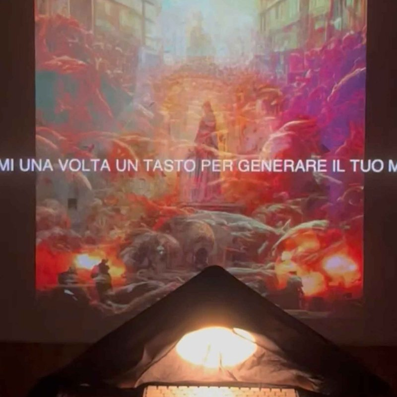
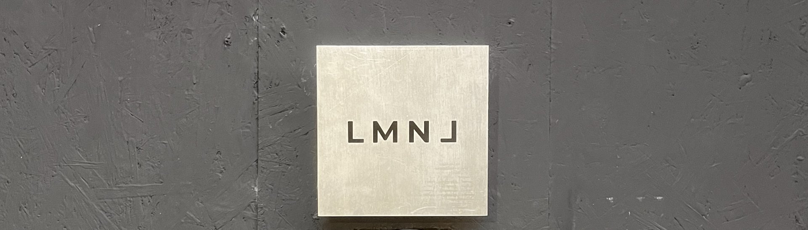

Poster Generator
Installazione interattiva per poster politici speculativi

Quante delle tue scelte le ha fatte il tuo algoritmo?
Il progetto nasce come esame universitario e diventa qualcosa di più grande. Il punto di partenza è il bombardamento mediatico: in trenta secondi di reel su Instagram possiamo attraversare contenuti potenzialmente infiniti e incompatibili tra loro. Quante delle nostre posizioni politiche, culturali, etiche sono davvero nostre — e quante sono il prodotto di una contaminazione pseudo-passiva che non abbiamo scelto di subire?
Il realismo capitalista lo ha capito benissimo: non consumi solo merce, consumi il sociale, il culturale, il diritto. E ti autoconvinci che quella sia la tua posizione.
"Il grande potere della macchina governativa potrebbe essere svolto da una macchina randomica che lancia slogan — l'indifferenza con cui trattano la vita delle persone è più o meno la stessa con cui lanciano i dadi a Risiko."
Un generatore di poster con database precostituiti su sei tematiche sociali. La tematica viene scelta dal lancio di un dado — il tono di voce, moderato, neutrale o estremo, dall'intensità del lancio. I poster prodotti mescolano paradosso e surrealismo per ridicolizzare tutte le posizioni del dibattito politico contemporaneo, dove tutto è slogan e niente è reale. Una dinamica situazionista: il détournement come strumento critico.
Il sistema si è evoluto nel tempo — dal dado fisico a uno schermo touchscreen dove tematica e tono possono essere scelti e intersecati manualmente. Ogni versione è una nuova iterazione dello stesso dispositivo critico.




Il pubblico interagisce con il sistema direttamente — lancia il dado o tocca lo schermo, sceglie la tematica, il tono, l'intensità. Il poster viene generato in tempo reale davanti ai loro occhi.
Il gesto è semplice, quasi banale. Il risultato è sempre leggermente assurdo, sempre leggermente riconoscibile.
È quello il punto: il poster generato dalla macchina non è così diverso da quello che circolava ieri sui social. La macchina randomica e il dibattito politico reale producono la stessa intensità, lo stesso formato, la stessa vaghezza. Esposto al DAS di Bologna dopo la residenza vinta durante Collagene, e a Roma da LMNL Space a seguito del workshop INSTALL — in collettiva con le altre artiste e artisti.